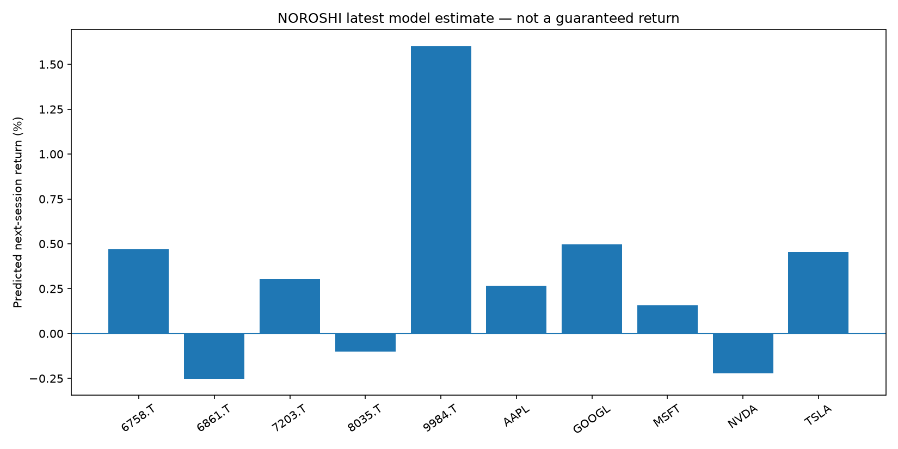
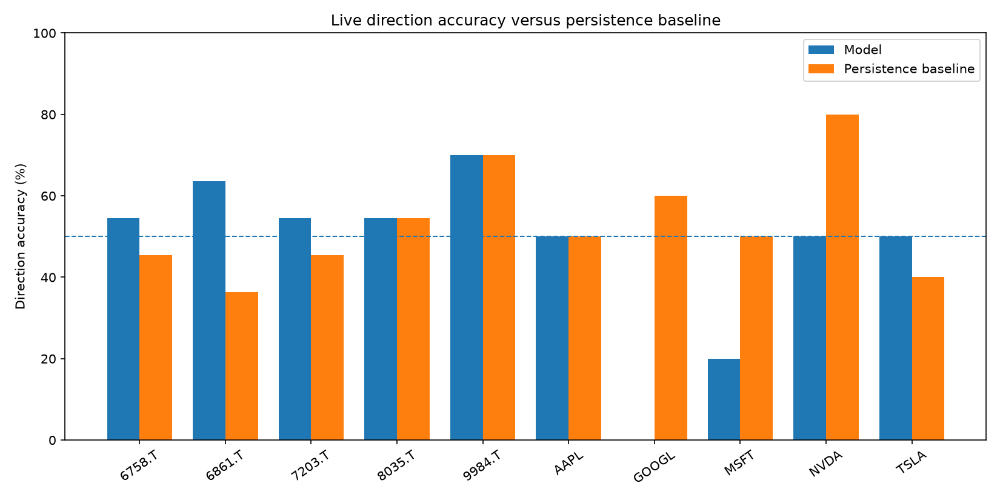

NOROSHI Auditable Forecast Dashboard
次営業日終値方向の研究用予測。売買の自動執行や利益保証は行いません。
システム状態
正常
生成日時 UTC
2026-09-18T13:34:27.738127Z
市場データ基準日
2026-09-17 / 2026-09-18
有効予測
10
Walk-forward方向精度
50.0%
baseline 50.1%直近90日Live方向精度
47.1%
104件 / baseline 52.9%状態と注意
- 現在、重大な警告はありません。
Confidenceは過去の的中率ではありません。 今回の判定に対するモデルのクラス確率です。実際の精度はWalk-forward検証と、保存後に確定したLive実績で別に測定します。
30件未満のLive評価は暫定値であり、対外的な精度主張には使いません。
最新予測
| 銘柄 | 基準日 | 終値 | 予測値 | 予測騰落 | 方向 | 上昇確率 | Confidence | 時系列検証 | 品質 | 研究Signal |
|---|---|---|---|---|---|---|---|---|---|---|
| 6758.T ソニーグループ | 2026-09-18 | ¥3,697 | ¥3,714 | +0.47% | 強気 | 72.3% | 72.3% モデル確率 | 50.5% baseline 53.0% | CAUTION | HOLD |
| 6861.T キーエンス | 2026-09-18 | ¥76,580 | ¥76,388 | -0.25% | 弱気 | 42.9% | 57.1% モデル確率 | 51.0% baseline 49.5% | PASS | HOLD |
| 7203.T トヨタ自動車 | 2026-09-18 | ¥3,025 | ¥3,034 | +0.30% | 強気 | 63.0% | 63.0% モデル確率 | 48.5% baseline 53.0% | CAUTION | HOLD |
| 8035.T 東京エレクトロン | 2026-09-18 | ¥53,110 | ¥53,056 | -0.10% | 弱気 | 47.4% | 52.6% モデル確率 | 49.0% baseline 48.0% | CAUTION | HOLD |
| 9984.T ソフトバンクグループ | 2026-09-18 | ¥6,315 | ¥6,416 | +1.60% | 強気 | 67.9% | 67.9% モデル確率 | 51.0% baseline 49.5% | PASS | BUY |
| AAPL Apple | 2026-09-17 | $337.00 | $337.90 | +0.27% | 強気 | 62.4% | 62.4% モデル確率 | 53.5% baseline 47.0% | PASS | BUY |
| GOOGL Alphabet | 2026-09-17 | $347.33 | $349.06 | +0.50% | 強気 | 64.7% | 64.7% モデル確率 | 49.0% baseline 49.0% | CAUTION | HOLD |
| MSFT Microsoft | 2026-09-17 | $497.75 | $498.54 | +0.16% | 強気 | 55.1% | 55.1% モデル確率 | 45.5% baseline 51.0% | CAUTION | HOLD |
| NVDA NVIDIA | 2026-09-17 | $219.34 | $218.85 | -0.22% | 弱気 | 47.9% | 52.1% モデル確率 | 50.0% baseline 51.5% | CAUTION | HOLD |
| TSLA Tesla | 2026-09-17 | $366.20 | $367.86 | +0.45% | 強気 | 57.8% | 57.8% モデル確率 | 52.0% baseline 50.0% | PASS | HOLD |
予測チャート

精度とbaseline

Live実績（銘柄別）
| 銘柄 | 確定件数 | 方向精度 | baseline | 差 | Return MAE |
|---|---|---|---|---|---|
| 6758.T | 11 | 54.5% | 45.5% | +9.1pt | 1.47% |
| 6861.T | 11 | 63.6% | 36.4% | +27.3pt | 0.70% |
| 7203.T | 11 | 54.5% | 45.5% | +9.1pt | 0.98% |
| 8035.T | 11 | 54.5% | 54.5% | +0.0pt | 2.08% |
| 9984.T | 10 | 70.0% | 70.0% | +0.0pt | 4.97% |
| AAPL | 10 | 50.0% | 50.0% | +0.0pt | 1.27% |
| GOOGL | 10 | 0.0% | 60.0% | -60.0pt | 1.52% |
| MSFT | 10 | 20.0% | 50.0% | -30.0pt | 1.43% |
| NVDA | 10 | 50.0% | 80.0% | -30.0pt | 1.53% |
| TSLA | 10 | 50.0% | 40.0% | +10.0pt | 2.11% |
データ鮮度
| Ticker | 市場 | 最終日 | 取得元 | 状態 | 経過日 | エラー |
|---|---|---|---|---|---|---|
| AAPL | US | 2026-09-17 | download | fresh | 1 | |
| GOOGL | US | 2026-09-17 | download | fresh | 1 | |
| MSFT | US | 2026-09-17 | download | fresh | 1 | |
| NVDA | US | 2026-09-17 | download | fresh | 1 | |
| TSLA | US | 2026-09-17 | download | fresh | 1 | |
| 7203.T | JP | 2026-09-18 | download | fresh | 0 | |
| 6758.T | JP | 2026-09-18 | download | fresh | 0 | |
| 9984.T | JP | 2026-09-18 | download | fresh | 0 | |
| 6861.T | JP | 2026-09-18 | download | fresh | 0 | |
| 8035.T | JP | 2026-09-18 | download | fresh | 0 |
評価方法
毎回、最新OHLCVを取得し、未完了セッションを除外してからLightGBM分類器・回帰器を再学習します。モデル内部評価には、未来データを訓練側へ混ぜないexpanding TimeSeriesSplitと1期間のgapを使います。
実運用評価は、変更不能なschema-v2予測を次の完成した市場セッションの終値と後日照合します。2025年11月で停止していた旧キャッシュ由来の予測は集計しません。
機械可読データ: latest_predictions.json / metrics.json / status.json / live_results.json